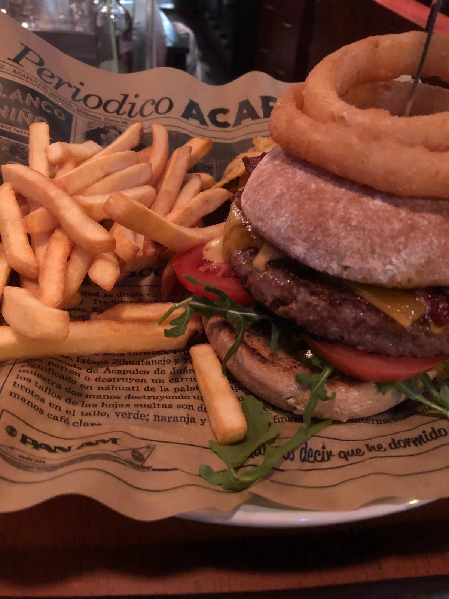
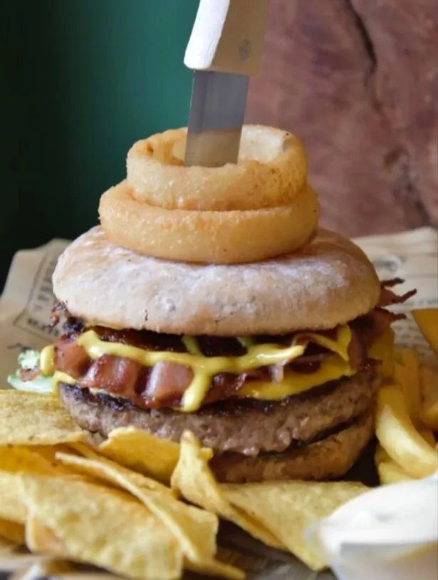
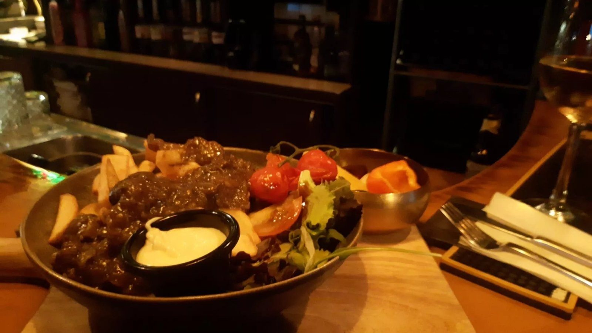
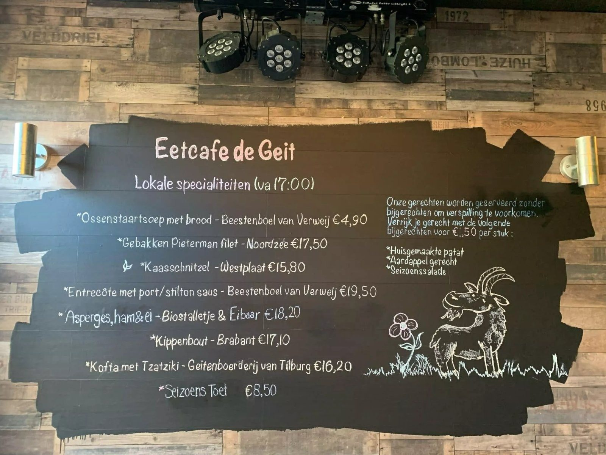
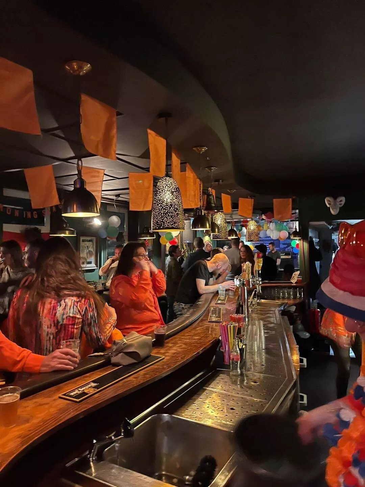

Gezellig eetcafé aan de Kaai
Klein, gezellig en goed eten. Bekend om onze burgers, met een speciaalbier of een goed glas wijn erbij. Welkom in Oude-Tonge.


Bekend om onze burgers
Bij de Geit eet je een stevige burger met huisgemaakte friet. Vanaf 17:00 staan er ook lokale specialiteiten op de kaart.
Daarbij schenken we speciaalbieren en goede wijnen. Kom gerust langs voor een hapje, een borrel of een hele avond.
- Burgers
- Huisgemaakte friet
- Lokale specialiteiten
- Speciaalbier & wijn
Lokale specialiteiten
Vanaf 17:00. Bij elk gerecht staat waar het vandaan komt.
Een greep uit de kaart vanaf 17:00

Bijgerechten naar keuze
Onze gerechten komen zonder bijgerechten, om verspilling te voorkomen. Kies er zelf bij wat je wilt, voor € 1,50 per stuk: huisgemaakte friet, een aardappelgerecht of een seizoenssalade.

Klein en gezellig
De Geit is een klein eetcafé aan de Kaai in Oude-Tonge. Je eet hier aan tafel of schuift aan bij de bar.
In het weekend blijven we open tot laat, dus na het eten kun je rustig blijven hangen.
Reserveren
Bel of stuur een WhatsApp-bericht, dan houden we een tafel voor je vrij.
Tafel reserveren
Laat even weten met hoeveel personen je komt en hoe laat.